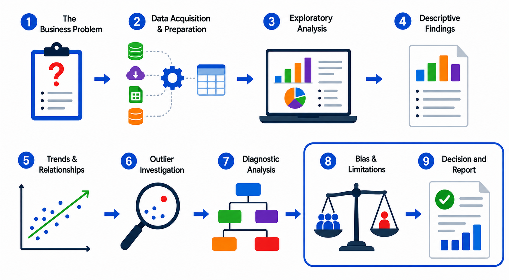

Evaluating Evidence and Communicating Decisions
The earlier steps in the workflow produced evidence: patterns, outliers, and possible explanations. This chapter asks what that evidence is worth. Not every result deserves the same level of confidence, and not every dataset supports the same kind of conclusion. An analyst must judge how much confidence to place in the findings, identify what the data can and cannot show, and communicate the results in a way the organization can use.
This final stage also requires care with AI-assisted analysis. AI may help summarize, classify, or recommend, but the analyst remains responsible for reviewing the output, checking the evidence, and documenting how the analysis was produced.

8. Recognizing Bias and Limitations
Every analysis has limits, and those limits should be stated clearly. Bias can enter before the analyst even sees the dataset. Data is not neutral simply because it is numerical. For example, if a company collects customer feedback only through its mobile app, it may exclude customers who do not use the app. That missing group creates a biased view of the customer experience and lowers confidence in the findings.
Bias can appear in sampling, measurement, system design, or data collection. A dataset may overrepresent one region, one channel, or one customer group while leaving out others. That does not always make the data useless, but it does affect how far the results can be generalized. The analyst should ask whether the sample is representative, whether important groups are missing, and whether the data reflects the full business problem or only part of it.
AI can introduce additional bias, especially if the training data is incomplete, poorly balanced, or not representative of the real-world problem. Trustworthy AI requires attention to validity and reliability, safety and security, accountability and transparency, explainability and interpretability, privacy, fairness, and harmful-bias management. Those concerns belong in the analysis because AI is part of the information system, not separate from it.
Other limitations can include inaccurate data, duplicate records, data-entry errors, missing information, privacy restrictions, and poor data quality. If these problems were not handled earlier in the workflow, they can lead to weak analysis and weak managerial decisions. Limitations should be presented as part of the evidence because they help the organization understand how much confidence to place in the findings.
Comprehension Check 1 of 5
Comprehension Check 2 of 5
Comprehension Check 3 of 5
9. Making Decisions and Reporting Findings
The final step is to turn the analysis into something the organization can actually use. This stage is often associated with prescriptive analytics, because it moves beyond describing, exploring, and diagnosing data to recommending what should happen next. At this point, the analyst interprets the findings in the context of the business problem and eventually communicate the results through charts, visualizations, and a written report. The report should be tailored to the audience: executives may need a concise summary of the key findings and recommendations, while technical reviewers may need more detail about the methods, sources, and assumptions used.
A strong report usually explains the business problem, the data sources, the methods used, the findings, the limitations, the recommendations, and any follow-up work that may be needed. The goal is not simply to describe the analysis, but to help the audience decide what to do next. Strategic decisions, process improvements, and operational changes are often the end result of good analysis.
AI can support this final stage as well, but it should still be evaluated carefully. It may help with visualization, summarization, or recommendation, yet it should never be trusted blindly. The analyst remains responsible for judging whether the findings are strong enough to report and whether the evidence supports the conclusion. When AI is used, the workflow should be documented so the organization can see what was automated, what was reviewed, and what was approved by a human.
Comprehension Check 4 of 5
Comprehension Check 5 of 5
Why This Workflow Matters
These steps bring the analysis to a responsible conclusion. They remind the analyst to judge the evidence, disclose the limits, and communicate findings in a way the organization can use. Good analysis is not only about finding a result; it is about explaining how much trust that result deserves and what action it supports. It keeps analysis grounded in the business problem, careful about the evidence, honest about the limits, and clear about what should happen next.
AI and Multimodal Data and Democratized Analytics
Modern AI systems can work with multiple forms of information, including text, images, audio, video, tables, and documents. This capability is called multimodal AI. For example, an organization may use AI to extract information from forms, summarize meeting recordings, classify images, identify information in reports, or combine written and numerical evidence. Multimodal systems can make previously difficult data sources easier to access, but the extracted information still requires review. Errors in handwriting recognition, transcription, image interpretation, or document structure can affect later analysis.
Democratized analytics refers to making data and analytical tools available to more people across an organization rather than limiting them to a small technical group. AI can help employees ask questions, create summaries, and explore data with less specialized knowledge. However, self-service access can also create inconsistent definitions, duplicated reports, privacy problems, and decisions based on misunderstood measures. Information Systems professionals help organizations create useful definitions, permissions, documentation, and guardrails. Their role is to make analytics more accessible while preserving accuracy, consistency, security, and responsible interpretation.
Chapter Completion
Answer all five comprehension questions, then check your work.
Chapter complete
Copy or write down this access code. You will need it later in class to receive your points.
evidence-decisions